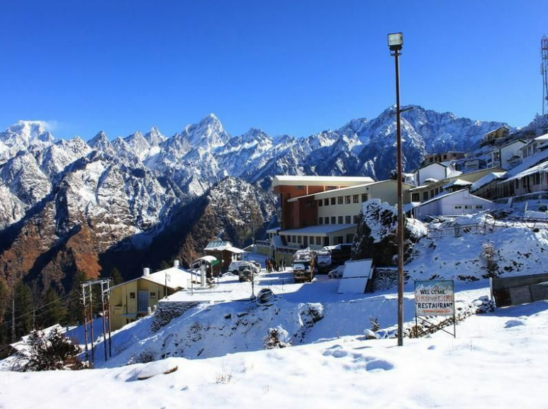
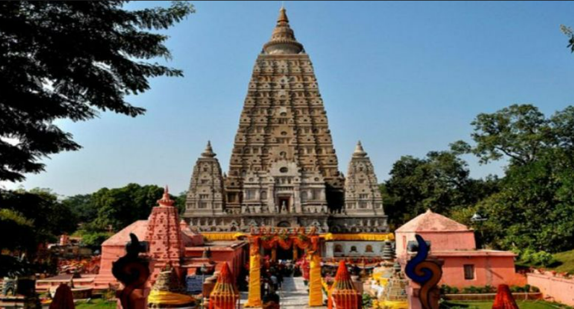

Here is a list of some Adventrous Places in India For Some Adventure
1.Aamby valley,Lonavala-Skydiving

Known for:Paragliding .Tiger's Leap .Imagicca
Aamby Valley is a beautiful township about 24 kilometres from Lonavala, in the district of Pune in Maharashtra, India. It has been developed by Sahara India Parivar. The 10,000-acre hilly terrain that the township now occupies has been converted into a splendid landscape through designs that are best suited for the environment and have an urban infrastructure compatible with international standards. The township is frequented for a day-long picnic or a weekend getaway by many.
Best Time:
Throught the Year2.Bir,Himachal Pradesh-Paragliding Capital of India

Known for:Paragliding in Bir Billing. Chokling Monastery .Gunehar Waterfall
Bir-Billing is considered as one of the top three paragliding sites in the world. Known as the Paragliding capital of India, Bir attracts adventure-seekers from throughout the country and the world. Hence, some of the best time that you might spend here might be with your feet in the air. As exciting and thrilling as it is, the activity of paragliding is set amid the lush green meadows with starting point at Billing (2400 m)
Best Time:
Throughout the Year29 Bir Attractions
3.Manali,Himachal Pradesh-White River Rafting,Trekking,Zorbing,Horse-Riding,Skiing,Paragliding

Known for:Old Manali .Salong Valley .Hidimba Temple
Manali is the hub of adventure activities in Himachal Pradesh. From white river rafting to trekking opportunities to zorbing to horse-riding to skiing to paragliding, Manali has everything to offer. Paragliding in Manali is a memorable experience. Starting with a basic training course, the operators are well organized, competent and trustworthy.
Best Time:
October to June50 Manali Attractions
4.Panchgani,Maharastra-For Scenic Paragliding Views

Known for:Kass Pleateu.Table Land .Mahabaleshwar
Deriving its name from the five hills surrounding it, Panchgani is a popular hill station near Mahabaleshwar. Panchgani makes a great destination for paragliding because of its scenic view. Various reliable paragliding clubs are there in the city. You could go on a joyride or take courses across levels, starting from elementary to advanced level.
Best Time:
September to May13 Panchgani Attractions
5.Auli,Uttarkhand- The skiing Destination of India
Dotted with the apple orchards, old oaks and pine trees there is no dearth of natural beauty in Auli. Apart from skiing you can also go for numerous treks in the hills of Garhwal Himalayas and enjoy the spellbinding views of the snow-draped mountains. Auli is a popular hill resort in the Himalayan range dating back to 8th Century AD.
Best Time:
Throughout the Year12 Auli Attractions
6.Mussoorie,Uttarakhand-Skywalk,Zip-lining,Rock Climbing,Rappelling,Caving,River Rafting

Known for:Landour.Mussoorie Mall Road .Kempty Falls
A quiet and lovely hill station from the outside, there is a different side to Mussoorie which will set your heart racing at a 100 miles an hour. Head on over to the 'Snow Adventure Zone' to experience the famous skywalk and other thrills such as zip-lining and zip swinging. If you seek more rugged adventurous activities, then you can opt for rock climbing, rappelling, caving or river rafting. Last but definitely not the least, taste some free flight over the picturesque views surrounding Mussoorie by indulging in some paragliding.
Best Time:
September to June32 Mussoorie Attractions
7.Khajjiar,Himachal Pradesh- Hores-Riding,Paragliding,Zorbing

Known for:Adnenture Activities IN Khajjiar . Khajjiar Lake.Kalatop Wildlife Sanctuary
Visitors can enjoy activities like horse-riding, Paragliding and Zorbing here. Zorbing is a more upcoming sport in the area the huge meadows and valleys here provide an ideal place for the sport. However, one can enjoy zorbing here, only during the summer months. Also while horse rides may cost a little less, zorbing costs around INR 200-300
Best Time:
Throught the Year13 Khajjiar Attractions
8.GGulmarg,Jammu & Kashmir- THe Skiing School

Known for:Gulmarg Gondala .Alpather Lake .Gulmarg Golf Course
Situated at an altitude of 2730 m above sea level, Gulmarg is a popular skiing destination located in Pir Panjal Range of Union territory of Jammu and Kashmir. During blizzards, beautifully characterised open spaces in the forest terrain can be skied
Best Time:
October to June20 Gulmarg Attractions
9.Bodh Gaya,Bihar - Buddha Madabodhi Tree and the land of Nirvana
Known for:Mahabodhi Temple .Great Buddha Statue .Tibetan Refugee Market
One of the most important pilgrimage sites for Buddhists, Bodhgaya is a village in the state of Bihar. It was here under the Bodhi tree that Gautama Buddha attained enlightenment. The place is bustling with pilgrims all through the year who come to pay their homage in the monasteries, shrines and temples. It also attracts tourists from India and abroad owing to its magnificent Buddha statue, the Mahabodhi Temple and the Bodhi tree.
Best Time:
October to March26 Bodh Gaya Attractions